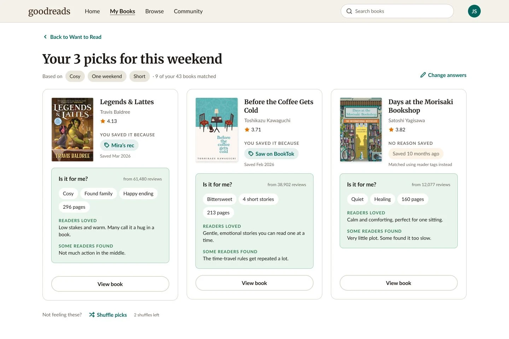
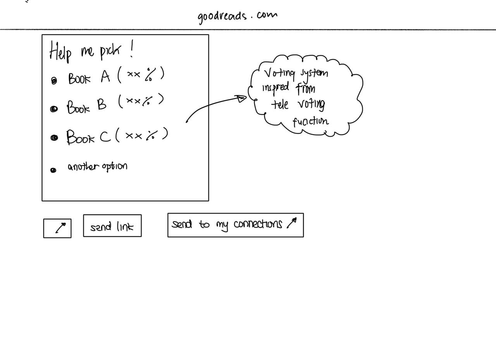
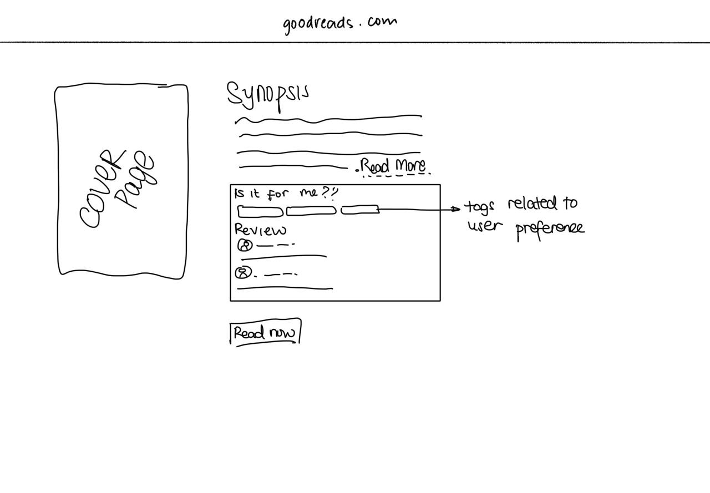
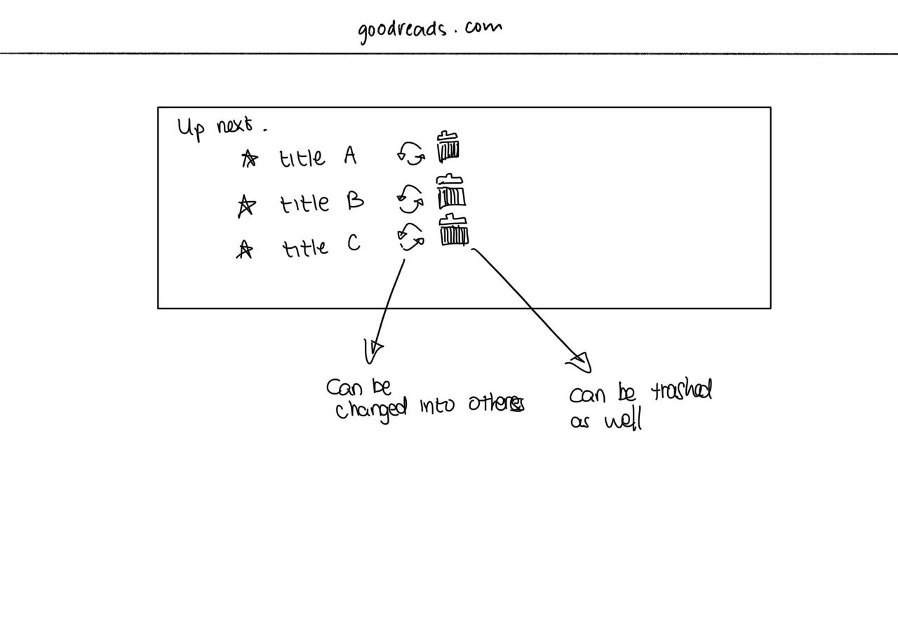
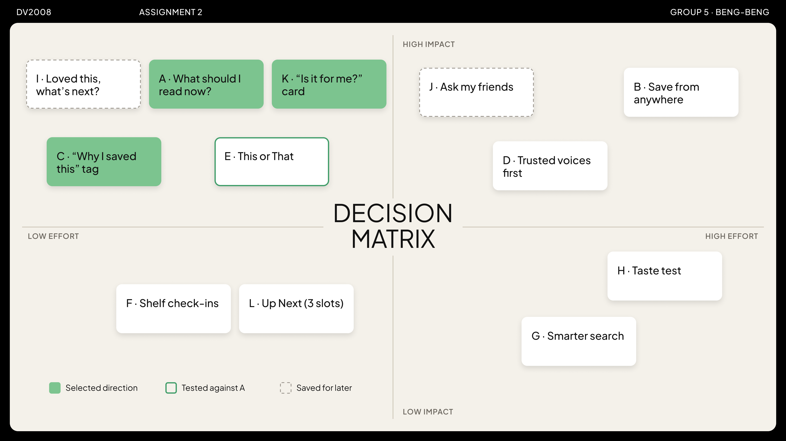
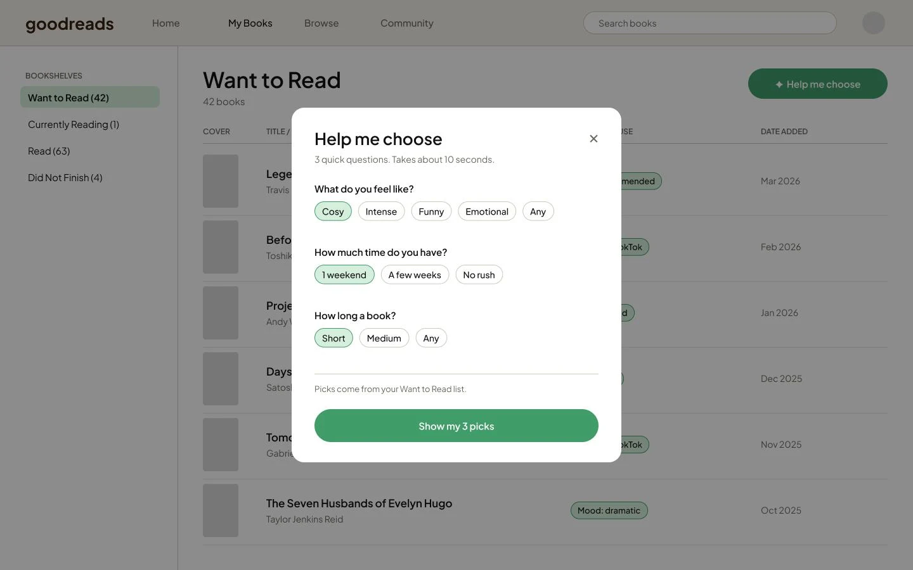
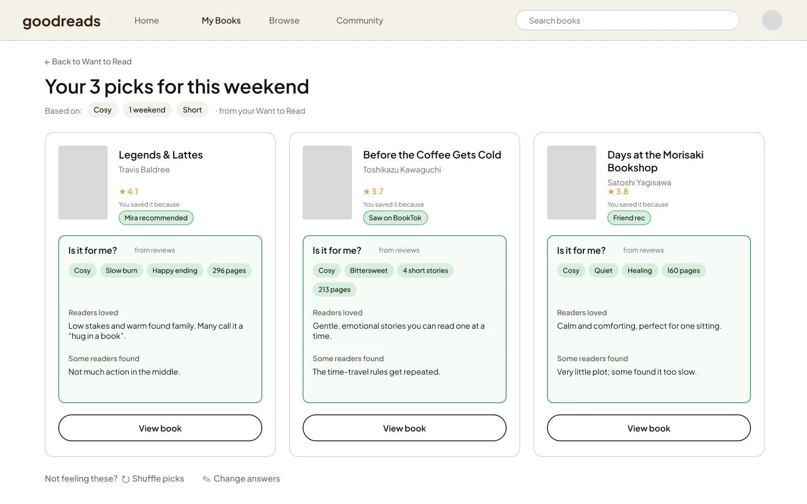
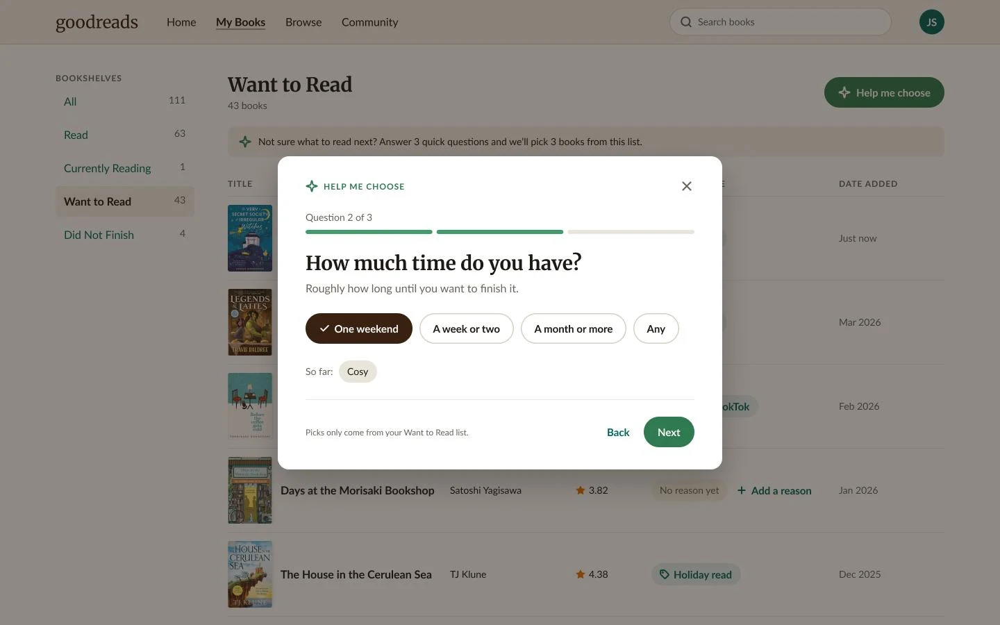
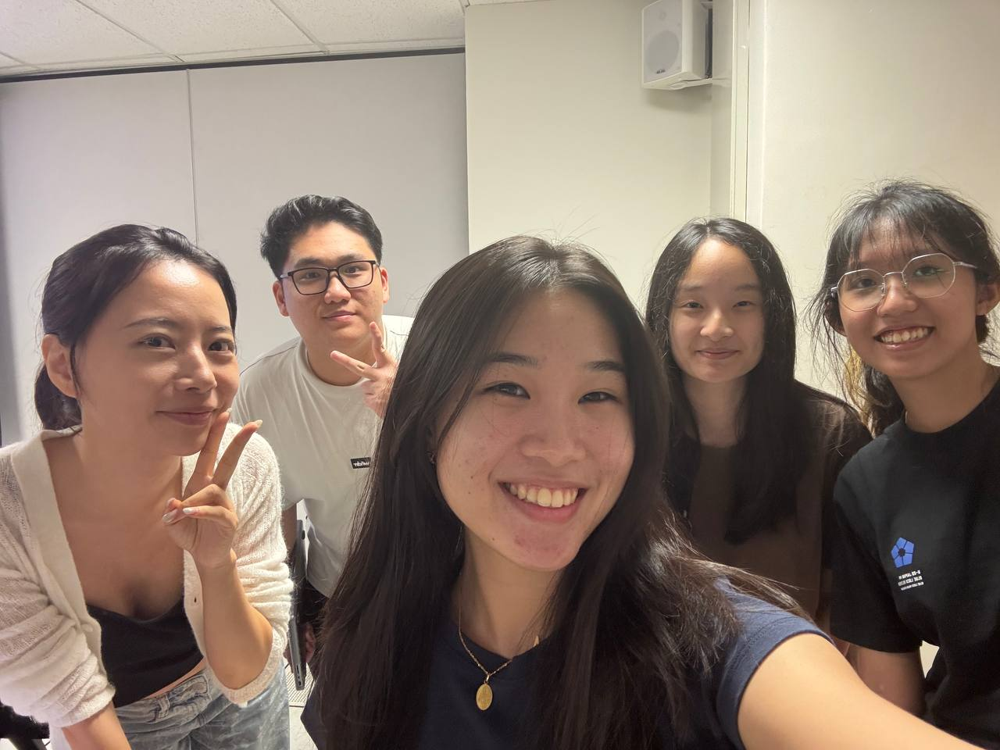

Start with how readers actually choose.
I interviewed readers and helped set up the A1 affinity map and problem statement. I joined A2 concept testing and the A3 study, where I piloted the script and facilitated P4.
DV2008 · Individual case study · 2026
From saved
to started.
Helping readers choose their next book from the list they already have.

01 / THE CHALLENGE
Saving a book is easy.
Choosing one is where
readers get stuck.
Our starting point was Goodreads. We explored how people discover, evaluate and organise books before deciding which part of the experience to improve.
The research shifted our attention to what happens after a book is saved: the original recommendation gets lost, the list keeps growing, and readers still need help deciding.
Narrow to Now connects three tasks: remember why you saved a book, narrow your list, and decide whether a pick is right for you.
MY CONTRIBUTION / GROUP 5
My part of the project became clearer as we moved from research to a prototype. I proposed ideas J, K and L in A2, then worked on the screens that take readers from their saved list towards a choice. We made the final direction together, and the study findings belong to the whole team.
I interviewed readers and helped set up the A1 affinity map and problem statement. I joined A2 concept testing and the A3 study, where I piloted the script and facilitated P4.
I proposed J (Ask my friends), K (“Is it for me?”) and L (Up Next). K became part of the A + C + K direction. I worked on its fit card and the decide step in our A2 prototype, alongside the team’s concept testing.
For A3, I worked on the Want to Read list, the Add a reason overlay and the questions leading to three picks. I built the selectable answers and Next/Back interactions so readers could move forward or change an earlier choice.
I also coordinated meeting times outside class, helped prepare our presentation, finalised the slides and handled the final submission. Those were supporting roles within a project we developed as a team.
02 / A1 — UNDERSTAND
We investigated real reading habits before proposing a feature.
START WITH THE JOURNEY
We began by looking at discovery, evaluation and tracking in Goodreads. Comparing StoryGraph, Fable and Hardcover helped us frame questions about these tasks; it did not tell us which features our readers needed.
The survey shifted our question from what should we improve in Goodreads? to how do people find a book they might choose, and where does Goodreads fit?
Our methods combined a survey, interviews, observed Goodreads use, an interface audit and background research.
Participants included new, lapsed, rare and frequent Goodreads users. Their responses helped us identify patterns, rather than estimate all readers’ behaviour.
A1 survey, n = 41. Multiple selections allowed.
We asked participants about the last time they looked for something to read. The opening question did not mention Goodreads or a problem. Follow-up questions traced where they went, what they needed to know and what happened next.
Participants then used Goodreads to find a book they would consider reading. We recorded first actions, hesitation, changed searches, workarounds and moments of leaving the site, using neutral prompts to understand their choices.
A friend, TikTok, Instagram or Reddit.
A screenshot, note, message or saved title.
Google, Goodreads and social platforms.
Synopsis, reviews, ratings and trusted opinions.
Read, save for later or pass.
P1 TikTok → screenshot → Google
P5 TikTok / Reddit → Goodreads → back to Reddit
A1 interview synthesis, slide 9. These routes show different roles for Goodreads; they are not one path every reader followed.
Goodreads became like a storage place instead of helping me choose.
P3 · A1 interview
FROM FINDINGS TO DESIGN QUESTIONS
Readers reached Goodreads with different information already in hand. How might we carry the original recommendation into the saved list?
Participants used friends, reviews and other communities to judge a book. How might we explain fit beyond an average rating?
Lists could accumulate without helping someone decide. How might we turn stored possibilities into a manageable next choice?
The direction we took into A2: help readers retain the context behind saved books, narrow their existing list and choose with more confidence.
03 / A2 — EXPLORE & CHOOSE
Research gave us the problem. A2 was about deciding which combination of ideas could help.
We considered different ways to support discovery, remembering and choosing. I contributed ideas J, K and L to this team ideation.
The team narrowed the ideas before developing the selected combination.
Readers from A1 tried A, “What should I read now?”, then E, “This or That”, and discussed which they preferred.
MY A2 IDEAS / EARLY WIREFRAMES
These are the sketches I made for our team ideation. J asked friends to weigh in, K put book-fit details beside the decision, and L kept a short Up Next list. We scored the full set of 12 ideas, tested A against E, then chose A + C + K as our direction.

Open sketch ↗Share a few possible reads and let friends vote. We kept this as a later idea rather than adding it to the tested flow.

Open sketch ↗Show preference-related tags and review notes before committing to a book. This idea became part of the team's selected direction.

Open sketch ↗Keep three books in view and allow one to be changed or removed. The separate queue was explored but did not become the final feature.
HOW WE SCORED THE IDEAS
Each of us could give an idea up to three points after hearing its explanation, considering feasibility, the wireframe design and its expected effect. With four team members, the maximum total was twelve.
We aimed to judge ideas consistently while recognising that the scores reflected our own assessments. We used the totals alongside research and reader feedback, then combined complementary ideas into one flow.

Open full size · Zoom to read ↗Impact increases upwards; effort increases to the right. A, C and K form the selected direction. E was tested against A, while I and J were saved for later.
Original A2 presentation, slide 10. View the source slide ↗
CHECK THE DIRECTION WITH READERS
This was an early comparison of two concepts. It gave us a direction to develop, with a modest preference for A. Because all five readers tried A before E, we treat the result as exploratory rather than a definitive ranking.
We combined the choice support in A with saved context in C and clearer book fit in K. The ideas address different parts of the same decision.
Keep the original motivation visible.
Narrow the books already on the list.
Judge the fit before committing.
Team scoring totals: A received 11/12 and K received 12/12. Concept comparison and selected direction: A2 presentation, slides 14 and 20. Open the original A2 file ↗

View full size ↗The questions cover mood, available time and length before showing picks from Want to Read.

View full size ↗K was one of the ideas I proposed, and I made its fit card and decide step for the A2 prototype. The card puts mood tags and review trade-offs beside each pick, giving readers more to go on than a star rating.
THE DESIGN TRADE-OFF
A three-book shortlist reduces what readers have to compare. The saved reason and “Is it for me?” summary preserve the context they need to judge those picks. A2 established that combination; A3 would test how clearly the steps connected.
A2 wireframes reproduced from the A3 presentation’s before-and-after comparisons.
04 / A3 — CONNECT & REFINE
Before the A3 study, we narrowed the scope and refined the transitions between saving, choosing and starting a book. These changes formed the prototype we tested; the follow-up proposals appear in the testing section.
THE SCOPE DECISION
Readers were already saving in several places. Cross-platform capture could make collecting titles easier, but our priority for A3 was helping readers choose from books they had already saved.
We left importing links, screenshots and external saved lists outside this prototype’s scope. A “Saved because” label still lets readers preserve the original context and see it throughout the experience.
A feature choice should be traceable to a user need.
REFINEMENT 01
In A2, the reason prompt interrupted saving. In A3, the book saves on the first tap and adding a reason is optional.
The main task must work for someone who skips the extra step.

A3 / MY PROTOTYPE UI WORK
I built the Want to Read list, the Add a reason overlay and the question screens for A3. The list keeps the original reason beside each book, while the questions let readers narrow their options one step at a time. I added selectable answers and Next/Back controls so they could change an earlier choice before seeing the picks.
 View full size ↗
View full size ↗The saved reason stays visible in the list. A reader who skipped it can add one later, and Help me choose starts from the books already saved.

View full size ↗The reader answers one question at a time. Earlier choices remain visible, with Back and Next available before the three picks appear.
These screens are my part of a prototype the four of us assembled and tested together.
REFINEMENT 02
Recommendations use reader tags such as mood, pace and length. Saved reasons add context, but are not required for a book to appear.
REFINEMENT 03
One reason label follows the book, questions arrive one at a time, and every decision offers Start reading, Not now or Remove.
05 / THE TESTED PROTOTYPE
Explore the six-step flow in the A3 study prototype. The confirmation and button-label changes proposed after testing are described below.
Tap Want to Read to save the book. Add an optional reason such as a friend’s recommendation or BookTok, or skip and keep going.
Adding context should support the task, not block it.
THREE WAYS TO FINISH
Moves to Currently Reading.
Want to Read drops from 43 to 42.
Hides the book from picks for 30 days.
It stays on the saved list.
Takes the book off Want to Read.
The list reflects the decision.
Show the closest books and help the reader adjust their answers.
Show both, with guidance on how to see more.
Point to changing answers or returning to the full list.
Make the missing context explicit and allow a reason to be added later.
06 / A3 — TEST & LEARN
Five readers. The same cosy, short-read task. Two experiences.
Method Remote, moderated think-aloud on Zoom.
Participants Five readers, aged 20–23, with mixed Goodreads experience.
Tasks Choose on the baseline, choose with Narrow to Now, save a recommendation, and respond when none of the picks fit.
MEDIAN TIME TO CHOOSE
60 seconds less at the median.
Compared with 3/5 on the baseline.
| Measure | Baseline | Narrow to Now |
|---|---|---|
| Choice within 3 minutes | 3 / 5 | 5 / 5 |
| Median time to choose | 148 seconds | 88 seconds |
| Confidence · average, 1–5 | 2.8 | 4.0 |
| Ease · average, 1–7 | 3.8 | 5.8 |
| Added a reason when saving | Not applicable | 3 / 5 |
A useful direction, with limits. This was one round with five readers, not a population-level result. Familiarity and task order may affect the comparison. The two follow-up changes below are proposed and still need another test.
07 / MY TAKEAWAYS
THE CHALLENGE
Looking back, our A1 presentation felt artificial and template-driven to me. It did not feel connected enough to Goodreads. I was also unfamiliar with FigJam, so exploring a different approach meant learning a tool alongside the project.
WHAT I DID
In A2, I suggested using FigJam to explore colour beyond the familiar template. As a team, we sought feedback from seniors and used OpenAI for brainstorming. We worked together to improve the A2 and A3 presentations.
WHAT I LEARNED
I learned more about colour theory, FigJam and interview techniques. Preparing tasks around believable reading situations made me think more carefully about what we asked participants to do. My aim was to approximate a real reading decision within a study; the sessions still had the limits of a moderated prototype test.
DESIGN LESSONS I’M TAKING FORWARD
Keeping the scope focused is easier when we can connect each feature decision to the research. Removing Save from Anywhere needed a clear explanation of why choosing mattered more for this project.
An optional feature cannot become a hidden requirement. The experience still needs to help readers who never add a reason.
A good recommendation is only part of the journey. Moving the book to Currently Reading makes the user’s choice visible and gives the flow a clear result.
Next time, I want to explore a few colour directions before committing to a presentation template, seek feedback earlier, and rehearse interview tasks with a teammate before running the sessions.
08 / EXPLORE THE PROTOTYPE
Try saving a book, choosing your preferences, and moving a pick to Currently Reading. The prototype is designed for desktop; use the full-screen Figma link for the clearest view.
PROJECT MATERIALS

SPECIAL THANKS
— Michael